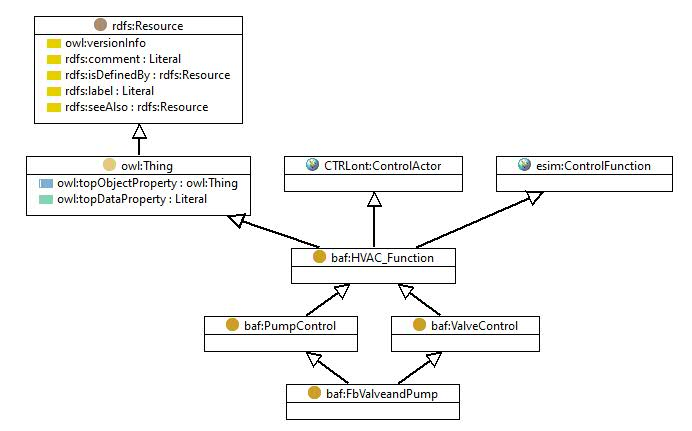

https://w3id.org/baf#FbValveandPump
Class 'Valve and pump {@en} '

dcterms:identifier
FbValveAndPump
type
Class [owl:Class]
label
Ventil und Pumpe
Valve and pump {@en}
subClassOf
Valve control
Pump control
Instances
Valve and Pump Pattern
Generated with
TopBraid Composer
by
TopQuadrant, Inc.